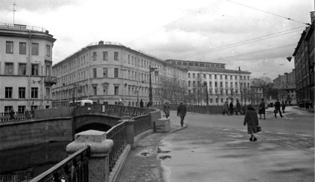
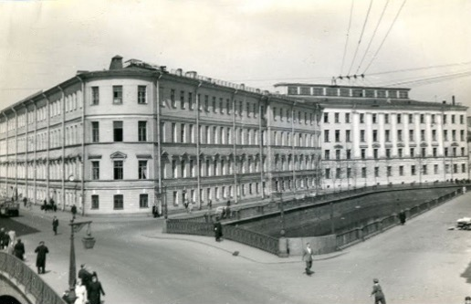

Иван Ильинский
Здание, в котором сейчас располагается один из корпусов университета ИТМО было построено еще в 1790-1793 гг. по проекту архитектора Л. Руски для размещения здесь заемного банка. Тогда здание было двухэтажным. Третий этаж надстроили в 1839-1840 гг. В 1848-1855 годах управляющим банком был друг А.С.Пушкина П.А.Вяземский.
В 1860 году Заемный банк упразднили, а его дома переданы сохранной казне. Здание было перестроено еще раз в 1864-1875 годах. С 1866 по 1917 гг. здесь находилась Государственная комиссия погашения долгов. После перестройки здесь располагались и квартиры чиновников. К сожалению, первоначальный фасад дома до нашего времени почти не сохранился.

С 1920 года здание было выделено для Ленинградского техникума точной механики, оптики и часового производства. Техникум был создан на базе Механико-оптического и часового отделения Ремесленного училища цесаревича Николая. Был сделан ремонт фасадов. В 1930-е годы здание было надстроено до 4 этажей с переделкой лестниц и частичным изменением фасадов. Был создан Учебный комбинат точной механики и оптики, куда помимо техникума с 1933 года входил и созданный институт ЛИТМО. Помимо техникума здесь до войны существовал Рабфак института.

В годы Великой Отечественной Войны здание было частично разрушено в результате попаданий артиллерийских снарядов. Были разрушены стена и крыша здания. После войны здание использовалось как административно-учебный корпус ЛИТМО. В настоящее время в здании располагаются подразделения Центра прикладной оптики, Военно-учебного центра и Мегафакультета компьютерных технологий и управления НИУ ИТМО.
270